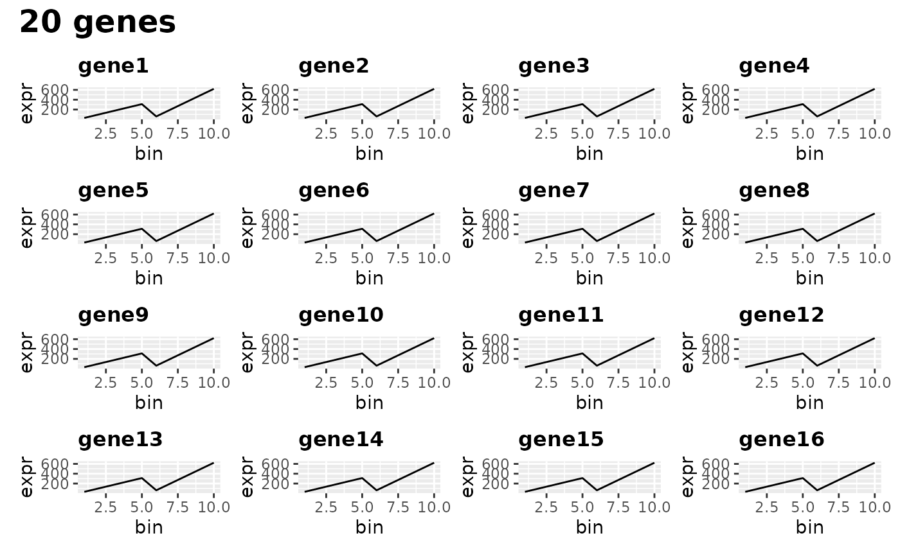

Evaluate Top Genes
evaluate_top_n_genes.RdShows plots over bins of expression of the top n genes. This is designed to help identify if you have selected genes that vary over the pseudotime you have chosen bins to exist over. Uses the normcounts of the SCE.
Arguments
- atgnat_data
The AtgnatData to get bins and expression from.
- n_genes_to_plot
The number of genes to plot.
- plot_columns
The number of columns to plot the grid with. Best as a divisor of
n_genes_to_plot.
Examples
ncells = 70
ngenes = 100
counts_matrix <- matrix(c(seq_len(3500)/10, seq_len(3500)/5), ncol=ncells, nrow=ngenes)
sce <- SingleCellExperiment::SingleCellExperiment(assays=list(
normcounts=counts_matrix, logcounts=log(counts_matrix)))
colnames(sce) = seq_len(ncells)
rownames(sce) = as.character(seq_len(ngenes))
sce$cell_type = c(rep("celltype_1", ncells/2), rep("celltype_2", ncells/2))
sce$pseudotime = seq_len(ncells)
genelist = as.character(seq_len(ngenes))
# Finding the best params for the AtgnatData
best_params = find_best_params(sce, genelist, pseudotime_slot="pseudotime", split_by="cells")
best_params
#> bin_count gene_count worst_specificity mean_specificity
#> 1 5 20 0 0
#> 2 5 30 0 0
#> 3 5 40 0 0
#> 4 5 45 0 0
#> 5 5 50 0 0
#> 6 5 55 0 0
#> 7 5 60 0 0
#> 8 5 70 0 0
#> 9 5 80 0 0
#> 10 10 20 0 0
#> 11 10 30 0 0
#> 12 10 40 0 0
#> 13 10 45 0 0
#> 14 10 50 0 0
#> 15 10 55 0 0
#> 16 10 60 0 0
#> 17 10 70 0 0
#> 18 10 80 0 0
#> 19 15 20 0 0
#> 20 15 30 0 0
#> 21 15 40 0 0
#> 22 15 45 0 0
#> 23 15 50 0 0
#> 24 15 55 0 0
#> 25 15 60 0 0
#> 26 15 70 0 0
#> 27 15 80 0 0
#> 28 20 20 0 0
#> 29 20 30 0 0
#> 30 20 40 0 0
#> 31 20 45 0 0
#> 32 20 50 0 0
#> 33 20 55 0 0
#> 34 20 60 0 0
#> 35 20 70 0 0
#> 36 20 80 0 0
#> 37 25 20 0 0
#> 38 25 30 0 0
#> 39 25 40 0 0
#> 40 25 45 0 0
#> 41 25 50 0 0
#> 42 25 55 0 0
#> 43 25 60 0 0
#> 44 25 70 0 0
#> 45 25 80 0 0
#> 46 30 20 0 0
#> 47 30 30 0 0
#> 48 30 40 0 0
#> 49 30 45 0 0
#> 50 30 50 0 0
#> 51 30 55 0 0
#> 52 30 60 0 0
#> 53 30 70 0 0
#> 54 30 80 0 0
#> 55 35 20 0 0
#> 56 35 30 0 0
#> 57 35 40 0 0
#> 58 35 45 0 0
#> 59 35 50 0 0
#> 60 35 55 0 0
#> 61 35 60 0 0
#> 62 35 70 0 0
#> 63 35 80 0 0
plot_find_best_params_results(best_params)

# Evaluating created AtgnatData
atgnat_data = as.AtgnatData(sce, pseudotime_slot="pseudotime", n_bins=10)
atgnat_data@genes = genelist[1:20]
# Check specificity of parameters
evaluate_parameters(atgnat_data, make_plot = TRUE)
#> [1] 0 0
# Check gene expression over pseudotime
evaluate_top_n_genes(atgnat_data)